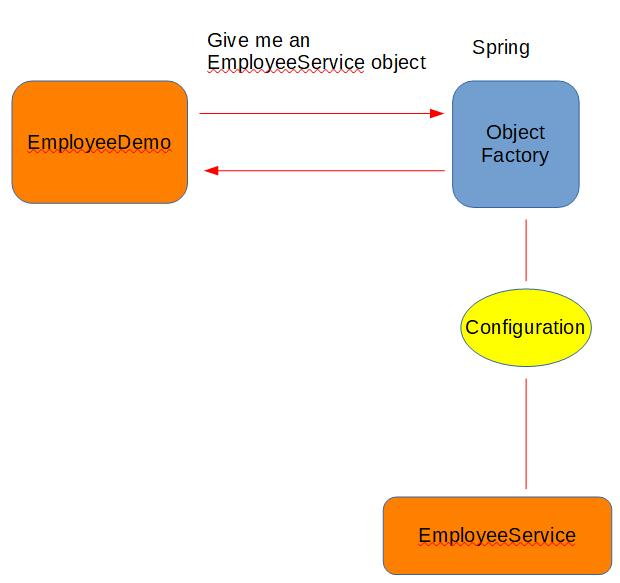

ΕΝΟΤΗΤΑ 1 SPRING - INTRODUCTION TO SPRING FRAMEWORK
Το Spring Framework υποστηρίζει ένα ευρύ φάσμα εφαρμογών. Σε μεγάλες επιχειρήσεις θα βρείτε Spring enterprise εφαρμογές που τρέχουν σε κάποιον application server, άλλες που τρέχουν με την μορφή jar και έχουν ενσωματωμένους application servers, και ίσως και standalone εφαρμογές κυρίως για batch δουλειές ή για integration με πολλαπλά συστήματα.
Το Spring Framework διευκολύνει την δημιουργία εταιρικών εφαρμογών Java. Παρέχει όλα τα απαραίτητα εργαλεία και βιβλιοθήκες που χρειαζόμαστε για να γράψουμε Java enterprise εφαρμογές και επίσης υποστηρίζει Groovy και Kotlin ως εναλλακτικές γλώσσες προγραμματισμού για το JVM. Είναι ένα πολύ ευέλικτο framework που μας επιτρέπει να αναπτύσσουμε κώδικα για πολλές και διαφορετικές αρχιτεκτονικές ανάλογα με τις ανάγκες της εκάστοτε εφαρμογής.
Από το Spring Framework 5.1, το Spring απαιτεί την εγκατάσταση της Java 8 αλλά παρέχει και υποστήριξη για το JDK 11 LTS. Η Java SE 8 update 60 προτείνεται ως η ελάχιστη έκδοση αν χρησιμοποιείται Java 8 σε συνδυασμό με την τελευταία έκδοση του Spring Framework.
Το community του Spring είναι αρκετά μεγάλο. Αυτό σημαίνει ότι το συγκεκριμένο open source framework το έχουν υιοθετήσει αρκετοί προγραμματιστές και υπάρχει μια πληθώρα πληροφοριών και άρθρων στον Ίντερνετ που καλύπτουν σχεδόν όλες σας τις ερωτήσεις.
Ο όρος Spring σήμερα σημαίνει διαφορετικά πράγματα ανάλογα με την εφαρμογή στην οποία αναφερόμαστε. Αν και ο όρος Spring αρχικά αναφερόταν στο ίδιο το Framework, σήμερα πολλοί αναφέρονται σαν Spring στην σουίτα προϊόντων που έχουν αναπτυχθεί τα τελευταία χρόνια όπως Spring Boot, Spring Batch κτλ.
Στη δική μας σειρά δωρεάν μαθημάτων Spring Framework θα αναφερόμαστε αποκλειστικά και μόνο στο Spring Framework και στις βασικές αρχές λειτουργίας του. Όταν εξοικειωθούμε αρκετά με το πως δουλεύει το Spring τότε θα δημιουργήσουμε μια νέα σειρά μαθημάτων για Spring Boot. Για να παρακολουθήσετε τα δωρεάν μαθήματα Spring Framework θα πρέπει να έχετε βασικές γνώσεις Java προγραμματισμού. Αν όχι, μπορείτε να διαβάσετε τα δωρεάν μαθήματα Java (https://kassapoglou.github.io/java/java-programming.html ) πριν ξεκινήσετε τα δωρεάν μαθήματα Spring Framework.
Παρόλο που η Java πλατφόρμα παρέχει πληθώρα λειτουργιών για την ανάπτυξη εφαρμογών, δεν διαθέτει τα μέσα για να δώσει μια αυτόματη συνοχή στα block κώδικα που αναπτύσσουμε. Αν και μπορούμε να χρησιμοποιήσουμε design patterns, όπως Factory, Abstract Factory, Builder, Decorator και Service Locator για συνδέσουμε τα αντικείμενα με μια δομημένη στρατηγική, τα μοτίβα αυτά δεν είναι κατάλληλα για όλες τις περιπτώσεις. Το κάθε ένα έχει την δική του περιγραφή, σενάριο εφαρμογής, και τυποποιημένες πρακτικές κώδικα που θα πρέπει να εφαρμόσετε εσείς
Το Spring Framework Inversion of Control (IoC) αναγνωρίζει αυτή την αδυναμία της Java και έρχεται να προσφέρει ένα δομημένο και εύκολο τρόπο σύνδεσης των διαφόρων αντικειμένων που υπάρχουν σε μια εφαρμογή. Το καταφέρνει αυτό έχοντας ήδη υλοποιήσει στις βιβλιοθήκες του τα περισσότερα από τα design patterns τα οποία ο προγραμματιστής απλά ενσωματώνει στον κώδικα με την χρήση των annotations. Όλη αυτή η θεωρία θα γίνει πολύ πιο κατανοητή όταν αρχίζουμε να αναλύουμε τα προγράμματα μας.
Όπως ήδη αναφέραμε στην αρχή της ενότητας, θα ασχοληθούμε σε αυτή την σειρά δωρεάν μαθημάτων Spring Framework μόνο με τις κύριες βιβλιοθήκες του Spring Framework. Το Spring Framework αποτελείται από σχεδόν 20 modules. Αυτά τα modules είναι οργανωμένα σε Core Container, Data Access/Integration, Web, AOP (Aspect Oriented Programming), Instrumentation, Messaging, and Test. Εμείς θα συγκεντρωθούμε στα modules του Core Container.
Νομίζω ότι αυτή η εισαγωγή σας έδωσε αρκετές πληροφορίες για το τι είναι το Spring Framework αλλά σίγουρα σας έχει δημιουργήσει και αρκετές πληροφορίες κυρίως προς τον τρόπο υλοποίησης του. Ας δούμε λοιπόν πως δημιουργούμε ένα απλό Spring Project και ταυτόχρονα θα συνεχίσουμε με την ανάλυση της θεωρίας μας.
Για αρχή, θα χρειαστεί να έχετε εγκαταστήσει Java 8 (την τελευταία έκδοση), maven και φυσικά ένα IDE. Στα δικά μου παραδείγματα θα χρησιμοποιήσω το IntelliJ (Community Edition). Αν δεν γνωρίζετε πως να εγκαταστήσετε σωστά το maven και πως να δημιουργήσετε ένα maven project, μπορείτε να διαβάσετε τις ενότητες από τα δωρεάν μαθήματα Apache Maven (https://kassapoglou.github.io/maven/learning-maven.html ) .
Αφού έχετε εγκαταστήσει σωστά το IntelliJ, μπορείτε να πάτε στο File → New → Project και αφού επιλέξετε Maven σαν το είδος του project που θέλετε να δημιουργήσετε πατάτε Next. Δεν τσεκάρετε την επιλογή Create from archetype.
Ονομάζουμε το project μας SimpleApplicationContext και πατάμε Finish. Το όνομα δεν έχει καμία σημασία οπότε μπορείτε να δώσετε ένα δικό μας όνομα στο project.
Αφού δημιουργηθεί η δομή του project, πρέπει να προσθέσουμε ορισμένα στοιχεία στο POM.xml αρχείο. Για αρχή, πρέπει να δηλώσουμε την έκδοση της Java που θα χρησιμοποιήσουμε. Αυτό δηλώνεται προσθέτοντας τα εξής properties:
To POM.xml αρχείο σας, μετά από τις παραπάνω αλλαγές, θα πρέπει να είναι παρόμοιο με αυτό που ακολουθεί:
POM.xml
<?xml version="1.0" encoding="UTF-8"?> <project xmlns="http://maven.apache.org/POM/4.0.0" xmlns:xsi="http://www.w3.org/2001/XMLSchema-instance" xsi:schemaLocation="http://maven.apache.org/POM/4.0.0 http://maven.apache.org/xsd/maven-4.0.0.xsd"> <modelVersion>4.0.0</modelVersion> <groupId>org.example</groupId> <artifactId>SimpleApplicationContext</artifactId> <version>1.0-SNAPSHOT</version> <properties> <maven.compiler.target>11</maven.compiler.target> <maven.compiler.source>11</maven.compiler.source> </properties> </project>
Ο καλύτερος τρόπος για να καταλάβετε και την πιο απλή μορφή ενός Spring Project είναι να την συγκρίνετε με ένα κανονικό Java project. Για αυτό πριν προχωρήσουμε στην θεωρία του Spring Framework ας γράψουμε έναν απλό Java κώδικα μέσα στο project που μόλις δημιουργήσαμε και μετά θα το μετατρέψουμε σε Spring Project.
Δημιουργούμε λοιπόν ένα καινούργιο πακέτο με το όνομα com.mycompany. Μέσα στο πακέτο θα γράψουμε πρώτα ένα απλό Interface με το όνομα EmployeeService. Το Interface περιέχει μια μέθοδο με το όνομα generateEmployeeID( ).
EmployeeService.java
package com.mycompany; public interface EmployeeService { public Long generateEmployeeID(); }
Μέσα στο ίδιο πακέτο δημιουργούμε τώρα μια κλάση με το όνομα EmployeeServiceImpl που κάνει implements το Interface. Αυτό σημαίνει ότι η κλάση μας πρέπει να περιέχει υλοποίηση της μεθόδου που κληρονόμησε από το Interface. Η υλοποίηση μας είναι πολύ απλή – η μέθοδο επιστρέφει την ώρα σε milliseconds. Αυτός ο αριθμός θα αντιπροσωπεύει τον αριθμό του εργαζόμενου μέσα στην εταιρεία.
EmployeeServiceImpl.java
package com.mycompany; public class EmployeeServiceImpl implements EmployeeService { @Override public Long generateEmployeeID() { return System.currentTimeMillis(); } }
Τώρα μας έχει απομείνει να γράψουμε την main( ) μέθοδο μέσα από την οποία θα δημιουργήσουμε τα αντικείμενα για να πάρουμε την πληροφορία που χρειαζόμαστε, δηλαδή το Employee ID. Δημιουργούμε μια ακόμα κλάση με το όνομα EmployeeDemo που περιέχει την main( ). Μέσα στην main( ) δημιουργούμε ένα αντικείμενο από την EmployeeServiceImpl κλάση που του ορίζουμε συμπεριφορά είδος EmployeeService – δηλαδή του Interface. Αυτή είναι μια συνηθισμένη τακτική που βασίζεται στον πολυμορφισμό όταν κληρονομούμε από interfaces. Τέλος, καλούμε δια μέσω του αντικειμένου την μέθοδο generateEmployeeID().
EmployeeDemo.java
package com.mycompany; public class EmployeeDemo { public static void main(String[] args) { EmployeeService employeeService = new EmployeeServiceImpl(); System.out.println(employeeService.generateEmployeeID()); } }
Output
1593549781295
Το δικό σας αποτέλεσμα λογικό είναι να είναι διαφορετικό αφού διαβάζουμε την ώρα σε milliseconds.
Πριν ξεκινήσουμε να δούμε τα βήματα για το πως γράφουμε ένα Spring Java project, θα πρέπει να κάνουμε και μια αναφορά στο documentation του Spring Framework https://docs.spring.io/spring/docs/current/spring-framework-reference/core.html#beans-basics . Ότι configuration χρησιμοποιήσουμε θα προέρχεται από το documentation του Spring Framework. Με αυτό τον τρόπο θα έχετε και εσείς την ευκαιρία να εξοικειωθείτε με αυτό, όπως και να έχετε ένα μόνιμο reference για να ανατρέξετε όταν αναπτύσσετε τον κώδικα σας.
Μια από τις καινοτομίες, ίσως η πιο σημαντική, του Spring Framework είναι η ιδέα του Spring Container. Στην ορολογία ανάπτυξης λογισμικού, η λέξη container χρησιμοποιείται για την περιγραφή οποιουδήποτε στοιχείου που περιέχει άλλα στοιχεία μέσα του. Για παράδειγμα, οι application servers όπως ο Tomcat ή ο TomEE έχουν ενσωματωμένους containers για να μπορούν να διαχειρίζονται WAR αρχεία. Ο ρόλος του container στους application servers είναι να δημιουργεί τα αντικείμενα, να τα συνδέει μεταξύ τους και γενικότερα να διαχειρίζεται ολόκληρο το life-cycle όπως την δημιουργία και την διαγραφή τους. Επίσης αν υπάρχουν σχέσεις μεταξύ των αντικειμένων (object dependencies), τότε αναλαμβάνει να εισάγει το ένα αντικείμενο μέσα σε ένα άλλο με την τεχνική του injection όπως ονομάζεται.
Οπότε στο δικό μας java παράδειγμα που αναλύσαμε πιο πάνω, σκεφτείτε ότι ένα container θα είχε την ευθύνη να δημιουργήσει το EmployeeServiceImpl αντικείμενο για εμάς, και εμείς απλά θα δηλώναμε που ακριβώς θέλουμε να το χρησιμοποιήσουμε. Ίσως το παρακάτω διάγραμμα να σας βοηθήσει να καταλάβετε την γενική ιδέα του container καλύτερα.
Σε Java standalone εφαρμογές δεν υπάρχει η έννοια του container. Αυτό είναι μόνο διαθέσιμο αν και εφόσον γράφουμε Enterprise Java επάνω σε κάποιον Application Server όπως TomEE ή Wildfly. Εδώ ακριβώς έρχεται λοιπόν η ιδέα του Spring Framework. Μας δίνει την δυνατότητα να έχουμε container μέσα σε μια Java standalone εφαρμογή. Όπως μας δείχνει και το παραπάνω διάγραμμα, το Spring Framework μας παρέχει ένα Object Factory από το οποίο μπορούμε να ζητάμε αντικείμενα και εκείνο με την σειρά του,με βάση το configuration που του έχουμε δώσει, να βρίσκει την σωστή υλοποίηση του (implementation) και να μας το παραδίδει.
Ο σκοπός λοιπόν του Spring container είναι να μας παρέχει δύο κύριες λειτουργίες:
1. Να δημιουργεί και να διαχειρίζεται τα αντικείμενα της εφαρμογής μας (Inversion of Control)
2. Να εισάγει αντικείμενα στην εφαρμογή όπου χρειάζονται (Dependency Injection).
Όπως βλέπετε, ο έλεγχος δημιουργία των αντικειμένων απομακρύνεται πια από τον προγραμματιστή και το αναλαμβάνει εξ ολοκλήρου το spring framework. Αυτό ακριβώς σημαίνει και το Inversion of Control. Ότι αντιστρέφουμε την ευθύνη και από τον προγραμματιστή την αναλαμβάνει το Spring Framework.
Τώρα η επόμενη ερώτηση, την οποία θεωρώ και πολύ λογική, σίγουρα θα είναι – πως δημιουργούμε και εισάγουμε το Spring Container στο κώδικα μας? Εδώ λοιπόν έχουμε τρεις επιλογές:
1. XML configuration file – Αυτός ο τρόπος απλά παραμένει ακόμα για να υποστηρίξει legacy εφαρμογές και δεν χρησιμοποιείται πια.
2. Java Annotations – Αυτός είναι ένας από τους σύγχρονους τρόπους για να ενεργοποιήσουμε και να χρησιμοποιήσουμε το Spring Container. Αν και χρησιμοποιούμε annotations, θα χρειαστεί και η ύπαρξη του XML configuration file αλλά με πολύ λίγες πληροφορίες.
3. Java Source code – Είναι και αυτός ένας μοντέρνος τρόπος, τον οποίο μπορούμε να χρησιμοποιήσουμε για να ενεργοποιήσουμε και να χρησιμοποιήσουμε το Spring Container μόνο μέσα από τον κώδικα μας χωρίς να χρειάζεται καθόλου το XML Configuration file.
Στα δωρεάν μαθήματα Spring Framework που θα αναλύσουμε, θα δείξουμε και τους τρεις τρόπους αφού τυπικά, αν και γράφουμε μοντέρνες εφαρμογές, κάποιες φορές έχουμε να υποστηρίξουμε και legacy συστήματα. Θα επικεντρωθούμε όμως περισσότερο στους μοντέρνους τρόπους εγγραφής κώδικα Spring για να προετοιμαστούμε κατάλληλα και για τις μελλοντικές ενότητες που θα ακολουθήσουμε σε Spring Boot και microservices.
Αν και υπάρχουν πολλά tutorials και εύκολα παραδείγματα στο Internet για να μάθετε Spring Framework, αυτό που λείπει, κατά την ταπεινή μου γνώμη, είναι μια μεθοδολογία στην ανάπτυξη του προγράμματος όπως και μια σειρά βημάτων για να καταλαβαίνει ο εκπαιδευόμενος τι προσπαθεί να πετύχει σε κάθε βήμα.
Για να μετατρέψουμε λοιπόν ένα απλό Java πρόγραμμα σε Spring Java πρόγραμμα ή για να γράψετε δημιουργήσετε και να γράψετε ένα Spring πρόγραμμα από την αρχή χρειάζεται κάθε φορά να ακολουθήσετε τρία απλά βήματα:
1. Να δηλώσουμε τα Spring Beans (δηλαδή τα αντικείμενα μας)
2. Να δημιουργήσουμε το Spring Container
3. Να ανακτήσουμε τα Spring Beans από το Spring Container και να τα χρησιμοποιήσουμε
Ας πάρουμε λοιπόν ένα ένα τα βήματα και ας δημιουργήσουμε μετατρέψουμε το Java πρόγραμμα μας σε Spring. Μαζί με τον κώδικα και το configuration θα προσθέσουμε και την απαραίτητη θεωρία.
ΒΗΜΑ 1 – Spring Beans Configuration
Εδώ θα πρέπει να χρησιμοποιήσουμε το documentation του Spring για να κατανοήσουμε καλύτερα πως πετύχουμε αυτό το στόχο.
https://docs.spring.io/spring/docs/current/spring-framework-reference/core.html#beans-basics

Για αρχή λοιπόν θα χρειαστεί να δημιουργήσουμε ένα καινούργιο XML αρχείο με ότι όνομα θέλουμε εμείς. Στο δικό μου παράδειγμα το ονομάζω beans.xml. Το αρχείο αυτό πρέπει να δημιουργηθεί μέσα στο φάκελο resources του project μας.
Μέσα στο αρχείο, γράφουμε το configuration όπως το εμφανίζει το documentation. Μπορείτε απλά να το κάνετε copy-paste. Κάθε bean tag που βλέπετε μέσα στο xml αρχείο αντιπροσωπεύει ένα αντικείμενο. Αυτό που πρέπει να δηλώσουμε στο Spring Framework είναι δύο πληροφορίες:
1. Το όνομα του αντικειμένου όπως θέλουμε να το ονομάσουμε εμείς (id)
2. Το όνομα της κλάσης από το οποίο θα δημιουργήσει τα αντικείμενα και το όνομα του πακέτου στο οποίο βρίσκετε (class).
Επειδή στο δικό μας απλό παράδειγμα έχουμε μόνο μια κλάση από την οποία θα δημιουργήσουμε αντικείμενα χρειαζόμαστε μόνο ένα bean tag. Οπότε σβήνουμε το δεύτερο.
Στο πρώτο bean tag δίνουμε το όνομα employeeServiceBean για id και ορίζουμε com.mycompany.EmployeeServiceImpl για το class. Στην ουσία λέμε ότι όποτε καλούμε το όνομα employeeServiceBean μέσα στον κώδικα μας τότε περιμένουμε να λάβουμε ένα αντικείμενο είδος EmployeeServiceImpl από το Spring Container. Το beans.xml αρχείο μετά από αυτές τις αλλαγές θα πρέπει να είναι ως εξής:
beans.xml
<?xml version="1.0" encoding="UTF-8"?> <beans xmlns="http://www.springframework.org/schema/beans" xmlns:xsi="http://www.w3.org/2001/XMLSchema-instance" xsi:schemaLocation="http://www.springframework.org/schema/beans http://www.springframework.org/schema/beans/spring-beans.xsd"> <bean id="employeeServiceBean" class="com.mycompany.EmployeeServiceImpl"> </bean> </beans>
Ο ορισμός του bean περιέχει και άλλα properties, σύμφωνα με το documentation, αλλά για τώρα δεν τα χρειαζόμαστε. Αυτά τα αναλύσουμε αργότερα όταν προχωρήσουμε στην θεωρία μας.
https://docs.spring.io/spring/docs/current/spring-framework-reference/core.html#beans-definition
ΒΗΜΑ 2 – Spring Container Creation
Το δεύτερο βήμα είναι η ενεργοποίηση του Spring Container. Αυτό γίνεται μέσω του του ApplicationContext interface. Για να ενεργοποιηθεί το Spring Container και να δημιουργήσει τα αντικείμενα για εμάς, θα πρέπει να γνωρίζει που βρίσκεται το beans.xml αρχείο που δημιουργήσαμε. Για αυτό το σκοπό, υπάρχουν διάφορες υλοποιήσεις του ApplicationContext, όπως το ClassPathXmlApplicationContext και το FileSystemXmlApplicationContext.
Αφού διαβάσει το Spring Configuration File, που στο δικό μας παράδειγμα είναι το beans.xml, το Spring Container ενεργοποιείται και δημιουργεί τα αντικείμενα για εμάς όπως δείχνει και το σχετικό διάγραμμα από το documentation.
https://docs.spring.io/spring/docs/current/spring-framework-reference/core.html#beans-basics
Για να υλοποιήσουμε προγραμματιστικά την πιο πάνω θεωρία, γράφουμε τον εξής κώδικα μέσα στην main( ):
Χρησιμοποιούμε την ClassPathXMLApplicationContext υλοποίηση αφού το beans.xml βρίσκεται μέσα στο project μας και πιο συγκεκριμένα στο resources φάκελο.
ΒΗΜΑ 3 – Retrieve Beans from Container
Στο τελευταίο βήμα, πρέπει να ορίσουμε τον τρόπο με τον οποίο θα έχουμε πρόσβαση στα αντικείμενα που υπάρχουν μέσα στο Spring Container. Εδώ χρειάζεται πάλι να διαβάσουμε το documentation το οποίο μας λέει ότι μπορούμε να το κάνουμε αυτό εάν καλέσουμε την μέθοδο getBean του context αντικειμένου που μόλις δημιουργήσαμε.
https://docs.spring.io/spring/docs/current/spring-framework-reference/core.html#beans-basics
Σαν πρώτη παράμετρο δηλώνουμε το όνομα του bean (δηλαδή του αντικειμένου) που πρέπει να συμφωνεί με το id όπως το είχαμε δηλώσει στο beans.xml. Η δεύτερη παράμετρος είναι το interface του οποίου η κλάση που δηλώσαμε μέσα στο beans.xml είναι η υλοποίηση. Ακολουθώντας λοιπόν αυτούς τους κανόνες, η επόμενη γραμμή κώδικα που πρέπει να γράψουμε μέσα στη main( ) είναι η εξής:
Τώρα αν καλέσουμε το employeeService έχει πρόσβαση στην generateEmployeeID() οπότε ο κώδικας όλης της EmployeeDemo είναι ως εξής:
EmployeeDemo.java
public class EmployeeDemo { public static void main(String[] args) { ApplicationContext context = new ClassPathXmlApplicationContext("beans.xml"); EmployeeService employeeService = context.getBean("employeeServiceBean", EmployeeService.class); System.out.println(employeeService.generateEmployeeID()); } }
Όσο αφορά τον κώδικα, το πρόγραμμα μας είναι έτοιμο, αλλά ακόμα δεν μπορεί να εκτελεστεί γιατί πολύ απλά δεν έχουμε προσθέσει τις βιβλιοθήκες του Spring Framework στο POM αρχείο του project μας. Οπότε, η έννοια του ApplicationContecx για παράδειγμα είναι άγνωστη στον compiler αυτή την στιγμή.
Για να προσθέσουμε σωστά τις βιβλιοθήκες, πρέπει να αναφερθούμε για άλλη μια φορά στο documentation του Spring Framework. Εκεί μας προτείνεται να δηλώσουμε το Spring Framework BOM στο POM μας για να μην αντιμετωπίσουμε προβλήματα με τις διάφορες εκδόσεις όσο αφορά τα dependencies.
Maven "Bill Of Materials" Dependency
Δηλώνουμε λοιπόν το ΒΟΜ στο POM μας και τα dependencies που χρειάζεται το project μας για να τρέξει.
POM.xml
<?xml version="1.0" encoding="UTF-8"?> <project xmlns="http://maven.apache.org/POM/4.0.0" xmlns:xsi="http://www.w3.org/2001/XMLSchema-instance" xsi:schemaLocation="http://maven.apache.org/POM/4.0.0 http://maven.apache.org/xsd/maven-4.0.0.xsd"> <modelVersion>4.0.0</modelVersion> <groupId>org.example</groupId> <artifactId>SimpleApplicationContext</artifactId> <version>1.0-SNAPSHOT</version> <dependencyManagement> <dependencies> <dependency> <groupId>org.springframework</groupId> <artifactId>spring-framework-bom</artifactId> <version>5.2.7.RELEASE</version> <type>pom</type> <scope>import</scope> </dependency> </dependencies> </dependencyManagement> <dependencies> <dependency> <groupId>org.springframework</groupId> <artifactId>spring-core</artifactId> </dependency> <dependency> <groupId>org.springframework</groupId> <artifactId>spring-context</artifactId> </dependency> <dependency> <groupId>org.springframework</groupId> <artifactId>spring-beans</artifactId> </dependency> </dependencies> <properties> <maven.compiler.target>11</maven.compiler.target> <maven.compiler.source>11</maven.compiler.source> </properties> </project>
Τώρα μπορούμε να πάμε πίσω στην EmployeeDemo κλάση και να προσθέσουμε τα δύο import statements που έλειπαν. Η τελική μορφή του EmployeeDemo είναι η εξής:
EmployeeDemo.java
package com.mycompany; import org.springframework.context.ApplicationContext; import org.springframework.context.support.ClassPathXmlApplicationContext; public class EmployeeDemo { public static void main(String[] args) { ApplicationContext context = new ClassPathXmlApplicationContext("beans.xml"); EmployeeService employeeService = context.getBean("employeeServiceBean", EmployeeService.class); System.out.println(employeeService.generateEmployeeID()); } }
Output
1593716143029
Αν προσέξετε το External Libraries, θα δείτε ότι ενώ εμείς χρειαζόμασταν τρία dependencies στην πραγματικότητα κατέβηκαν περισσότερα. Για αυτό άλλωστε χρησιμοποιήσαμε το BOM για να μπορεί το maven να βρίσκει τα σωστά dependencies με τα σωστά versions.
Σε αυτό το πρώτο δωρεάν μάθημα Spring Framework έπρεπε να καλύψουμε κάποια βασική θεωρία και βασική λειτουργία του Spring Framework για να μπορείτε να κατανοήσετε καλύτερα την διαφορετικότητα από το να γράφετε χωρίς το Spring Framework. Αν κάποια σημεία της θεωρίας που καλύψαμε σας είναι ακόμη δύσκολο να τα κατανοήσετε, μην ανησυχείτε αφού θα επανέλθουμε σε αυτά πολλές φορές σε μελλοντικές ενότητες.
Τέλος, χρησιμοποιήσαμε το XML configuration για να δείτε λίγο καλύτερα τι σημαίνει container, bean και ApplicationContext. Αν και θα δείξουμε κάποια ακόμα παραδείγματα χρησιμοποιώντας XML configuration file εμείς κυρίως θα επικεντρωθούμε στο Java source code. Οπότε έχουμε πολλά ακόμα να καλύψουμε.